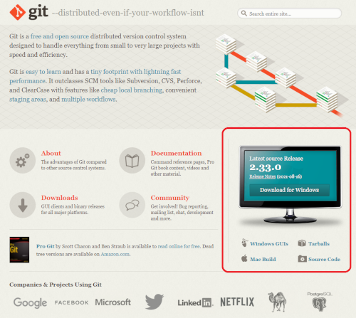
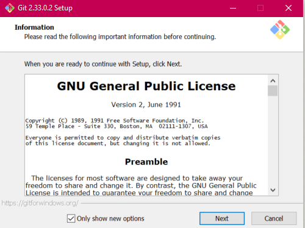
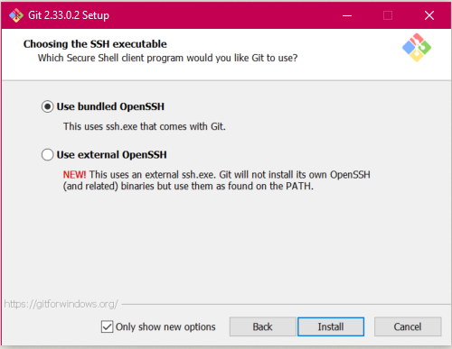
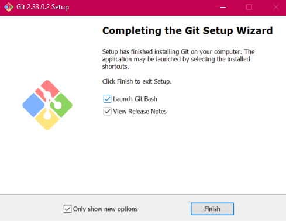

Tutorial
3 - Instalação do Git
3.1 - Instalando o Git no Windows
- Acessar https://git-scm.com/ e selecione o download de acordo com o software desejado.

- O download deverá começar sozinho, caso não comece, selecione para baixar manualmente.
- Apos o download concluido, execute o programa e clique na opção next.

- Selecione a primeira opção e install.

- O programa ira baixar e assim que concluir, marque as opçoes de acordo com a imagem abaixo.

3.2 - Instalando o Git no Linux
FALTA FAZER
4 - Configurando o Git
FALTA FAZER
5 - O que são BRANCHES?
Repositório, ou repo, é um diretório onde os arquivos do seu projeto ficam armazenados. Ele pode ficar em um depósito do GitHub ou em seu computador. Você pode armazenar códigos, imagens, áudios, ou qualquer outra coisa relacionada ao projeto no diretório.
Branch é uma cópia do diretório. Você pode usar o branch para desenvolver isoladamente. Trabalhar em um branch não irá afetar o repositório central ou outros branches. Depois de finalizar o trabalho você pode combinar seu branch isolado com outros branches através de um merge. Para combinar o branch isolado ao repositório central utiliza-se o Pull Request.